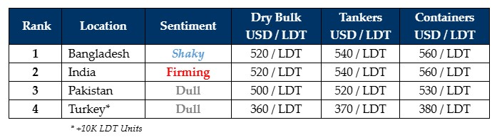

inWeekly Demolition Reports03/06/2024

As May greets a tumultuous end in the global ship recycling markets, increasing vessel prices on the back of a firming demandfrom fiery Alang Recyclers, who seem to have set a nitroglycerine fuse off on the beaches of Alang since the start of the voting on April 24, has now seen local steel plate prices climb nearly USD 45/Ton despite suffering through (minimal) volatility during this week. Notwithstanding, an all too familiar lack of decent quality tonnage available to global recyclers to sink their teeth into, remains blisteringly omnipresent as the industry ventures into the traditionally quieter monsoon months and freight sectors appear to be performing firmly once again, depriving recycling destinations of meaningful tonnage yet again.
As a result, the industry has seen several Pakistani and Bangladeshi yards fall increasingly into wait-and-watch mode before decidedly tabling a firm offer, while in Alang, the expected return of a partial shutdown state on the back of yard workers returning to their hometowns through the traditionally slower monsoons, is hopefully set to ease some of the pressure on yard costs (ongoing losses) as the restricted supply that is well into its 2nd year, may inadvertently deliver a (financial) trachea for Alang. Even Turkey on the far end continues to suffer, with plenty of fuel for fire, yet no steel to smelt.
Other than the occasional HKC unit that has popped into the market or a variety of poorer condition vessels from Far Eastern Sellers that stand at the end of their illogically extended trading lives, sizeable tonnage from the +20K LDT camp has been and continues to pull quiet the impressive Houdini trick (i.e. remain invisible) as other than a single Capesize bulker and a Panamax container that have been sold for recycling so far this year, there have been no Suezmax or even VLCC candidates to speak of.
Finally, as freight rates pick up once again and are forecasted to remain steady through much of June, the ongoing squeeze on the supply of vessels is expected to persist, especially as inexorable circumstances in the Middle East and the Red Sea Shipping lanes continue at large and even more are expected in the near future on the back of recent incursions into Rafah.
Just like May, June looks set to remain in a state of justifiable jeopardy, other than an aggressive India that’s now on the verge of jousting Bangladesh out of 1st place.
For week 22 of 2024, GMS demo rankings / pricing for the week are as below.

📄 Download PDF: Ship-recycling-market-insight-Week-22-5-24-2024-Mays_Out_Rains_Out.pdfSource: GMS,Inc.https://www.gmsinc.net/gms_new/index.php/web